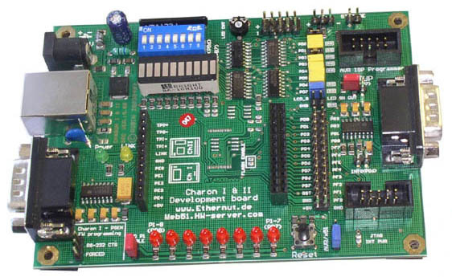
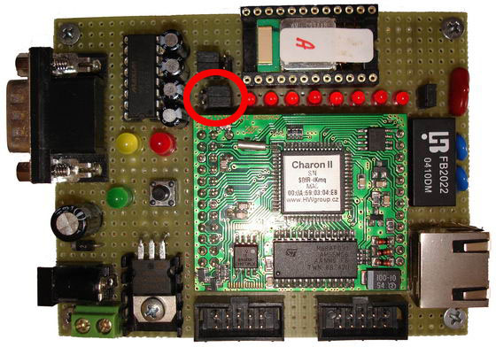

Jak postupovat
Krátký popis jak postupovat při kompilaci zdrojových souborů a oživení přípravku na platformě Windows.
- Nainstalovat WinAVR
- Nainstalovat AVR Studio 4, nebo jiný program, který umožní naprogramovat Charon 2 modul.
- Nainstalovat NutOS
- Konfigurace a Build NutOS
- Než začneme se samotnou konfigurací je nutné v adresáři s nainstalovaným NutOS vyhledat všechny soubory (zpravidla několik Makefile) obsahující '-Os' a zaměnit tento řetězec za '-O2'. Tím odstraníme nekompatibilitu WinAVR 4.11 a NutOS 4.2.1. '-Os' totiž způsobuje nadměrné vyoptimalizování a linkování poté končí chybou.
-
Nyní spustíme konfigurátor nutconf.exe. Vybereme konfiguraci charon2.
V menu Edit -> Setting se nastavují návaznosti na překladač a programátor.
Nastavujte pouze relativní cesty, předejdete tím problémům při make.
Doporučení jak jednotlivé záložky nastavit:
- 1.záložka - repository nut/conf/repository.nut neměnit
- 2.záložka - source dir: nut, platform: avr-gcc, build dir: nutbld, install dir: nutbld/lib
- 3.záložka - Nastavit cesty k WinAVR (např. takto: c:\skola\10.semestr\36AMI\ethernut-4.2.1\nut\tools\win32; c:\tools\WinAVR\bin\;c:\tools\WinAVR\utils\bin\;). Nezapomeňte za poslední cestu dát také ';'.
- 4.záložka - aplication dir: nutapp
-
Nyní si vytvoříme vlasní Build systému pro naší platformu. Libovolně můžeme vytvořit ukázkové aplikace.
- Build -> Build NutOS
- Build -> Sample directory
- Teď je ten pravý okamžik nahrát BlueNET (bt2tcp) do adresáře nutapp a pomocí příkazu 'make' jej přeložit.
- Spustíme AVR Studio a binárku 'bt2tcp.hex' nahrajeme do mikra.
- Po zapnutí napájení 'Přípravek' přijímá TCP spojení na adrese 192.168.1.100:23. Doporučujeme použít přímé propojení kříženým kabelem a terminál putty. Po úspěšném navázání TCP spojení je inicializována Bluetooth část.
Poznámky k programování přípravku
Pokud pro programování používáte AVR Studio a programátor STK-500 SPI, budete ještě potřebovat desku Charon 2 Development Kit nebo upravit "bastl" desku z HWlabu. Programátor STK-500 vyžaduje napájení od SPI, které není na HWlab desce zapojeno. Tím se poněkud komplikuje nahrávání firmwaru. Charon 2 modul je potřeba zasadit do Charon 2 Development Kit, tam jej naprogramovat, poté jej vyjmout a vložit zpět do HWlab desky s Bluetooth modulem.
Zapojení HWlab desky
Deska obsahuje 2 páry jumperů. První blíže k Charon 2 modulu přepíná RX a TX RS232 signály jdoucí do modulu. Pro připojení Bluetooth modulu musejí být zapojeny blíže k patici s BT modulem. V opačném případě jsou připojeny na COM9 konektor, což se může hodit pro debugování. Druhý pár jumperů by měl přepínat signály RTS a CTS, ty ale nejsou na BT patici připojeny a tudíž nemají vliv.
